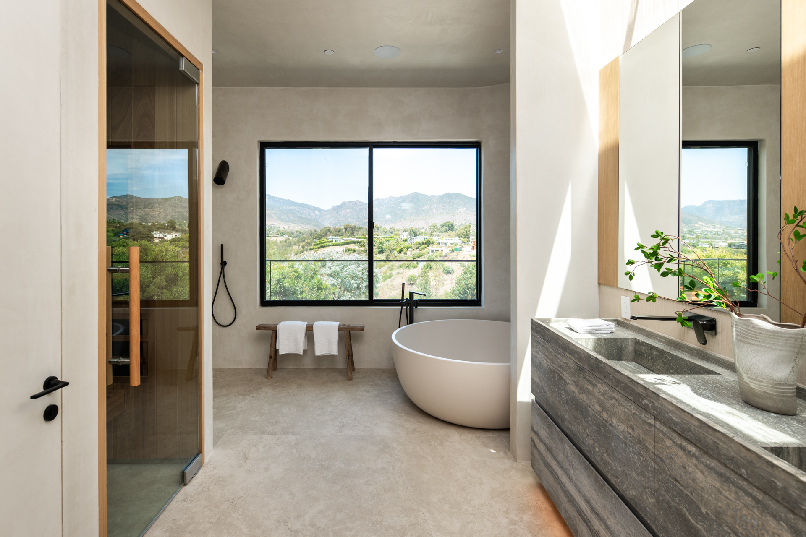

Materials
Rift White Oak
Straight, quiet grain. Soft matte finishes that catch light without glare. The preferred pale wood for our California residences.

Walnut
Rich, warm depth. Used for islands, accents, and full kitchens where the architecture calls for grounded contrast.

Natural Organic Stone
Limestone, marble, and other stones with natural movement. Pairings that feel inevitable with the wood and the light.